라운드4 · 아이디어 × 레퍼런스 · 2026.09.10
반려동물 카페 · 각색 수정안
카페 소개를 추가하고 실내·마당·크기·준비물을 동반 조건으로 모았어요. 아래 앱에서 검색부터 예약 체험까지 눌러볼 수 있어요.
전체 느낌부터 다시 비교
원본의 색 이름 대신 중립면·강조·그림·간격의 관계를 보세요. 원본 CSS 폭은 미상이며 아래는 표시 폭을 맞춘 비교예요. 수정안에 대한 사용자 품질 평가는 아직 받지 않았어요.
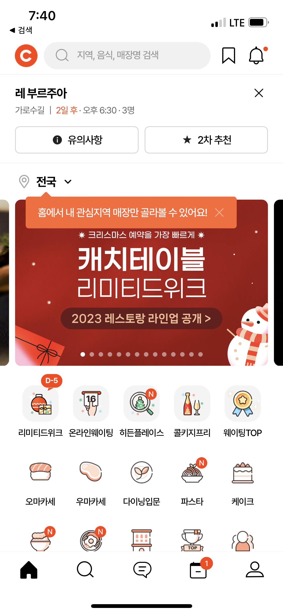
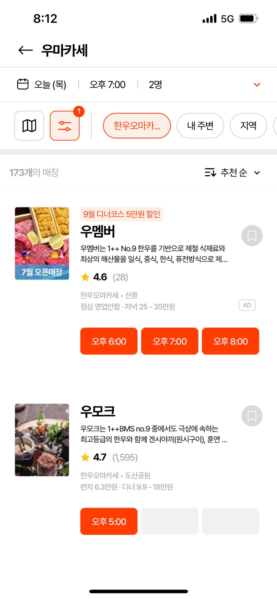
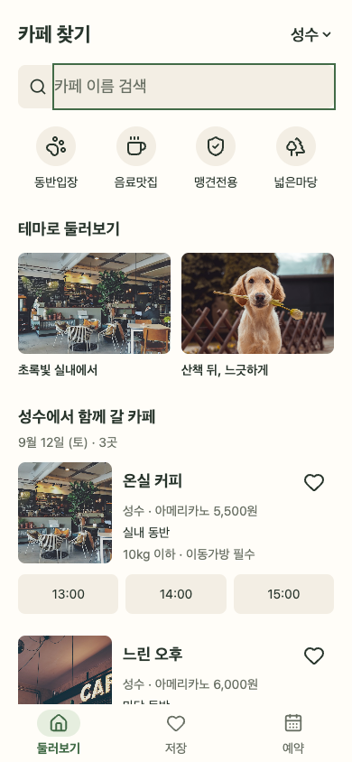
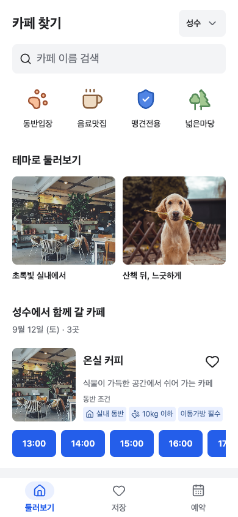
Q1 · 검색과 지역은 전체 목록에 적용
회색 검색과 먹색 정보로 중립적인 탐색 조작을 표현했어요. 지역과 검색이 함께 목록에 적용돼요.
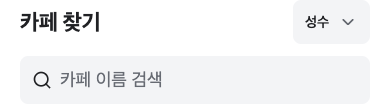
E1 실제 입력 프롬프트 펼치기
이번 변경은 구현 전 고정 P4와 공유 스타일 계약을 함께 전달했어요. 최초 P1–P3는 교정 이력에 보존했어요.
- 공통: 최대430px, 가로20px 패딩 소유권 유지. 본문 및 조건14px 하한, 제목22px/섹션·매장이름18px. 페이지 #fff, 중립 조작 #f3f4f6, hover #e9edf3, 선택 보조면 #eaf0ff, 주 행동 hover #174bc5, 오류 #b42318. 역할 토큰에서 정의/참조한다. 경계선·탭 밑줄·슬로건을 추가하지 않는다. - E1: 현 지역/검색 기능 유지. 검색의 연회색과 검정 텍스트로 중립 조작임을 드러낸다.
Q2 · 퀵메뉴의 리듬을 4개 기준으로
공통 정렬은 유지하고 대상별 색·채움·실루엣을 구별했어요. 공식 Lucide를 각색한 그림이므로 원본 일러스트와 동일하지는 않아요.
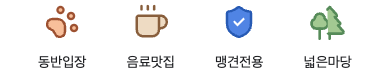
E2 실제 입력 프롬프트 펼치기
이번 변경은 구현 전 고정 P4와 공유 스타일 계약을 함께 전달했어요. 최초 P1–P3는 교정 이력에 보존했어요.
- 공통: 최대430px, 가로20px 패딩 소유권 유지. 본문 및 조건14px 하한, 제목22px/섹션·매장이름18px. 페이지 #fff, 중립 조작 #f3f4f6, hover #e9edf3, 선택 보조면 #eaf0ff, 주 행동 hover #174bc5, 오류 #b42318. 역할 토큰에서 정의/참조한다. 경계선·탭 밑줄·슬로건을 추가하지 않는다. - E2: 4개 퀵메뉴/라벨/필터 기능 유지. 동일 원 배경을 제거한다. 공식 Lucide SVG의 실제 형상을 사용하되 paw는 살구색 면, coffee는 갈색과 크림색 면, shield-check는 파랑 면, trees는 녹색 면처럼 대상 구별에 필요한 그림 색을 사용한다. 그림 전체를 단색 mask로 평탄화하지 않는다. 새 SVG 경로를 발명하지 않고 기존 공식 경로의 fill/stroke와 개별 크기를 조정한다. 이 출처의 그림 역할을 복원하기 위한 범위 한정 선택이다. 선택은 슬롯 주위의 낮은 대비 면과 진한 라벨로 명확히 하며 그림을 바꾸거나 이동하지 않는다. forced-colors에서도 공식 SVG 선이 보여야 한다.
Q3 · 테마는 사진 두 장으로 비교
사진을 더 크게 보여주고 바로 아래 제목을 붙였어요. 사진이 분위기를, 제목이 선택 기준을 전하도록 조정했어요.
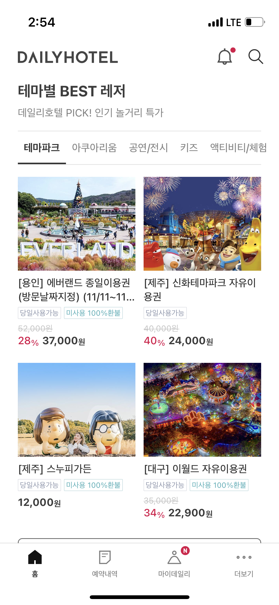
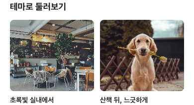
E3 실제 입력 프롬프트 펼치기
이번 변경은 구현 전 고정 P4와 공유 스타일 계약을 함께 전달했어요. 최초 P1–P3는 교정 이력에 보존했어요.
- 공통: 최대430px, 가로20px 패딩 소유권 유지. 본문 및 조건14px 하한, 제목22px/섹션·매장이름18px. 페이지 #fff, 중립 조작 #f3f4f6, hover #e9edf3, 선택 보조면 #eaf0ff, 주 행동 hover #174bc5, 오류 #b42318. 역할 토큰에서 정의/참조한다. 경계선·탭 밑줄·슬로건을 추가하지 않는다. - E3: 두 열 테마 사진 144px, 사진/라벨8px. 제목 아래12px. 둘째 사진의 얼굴 crop은 기존 검증값 유지. 섹션 간36px로 검색/퀵, 테마, 목록의 영역을 구별한다. 넓어진 테마가 목록을 과도하게 밀어내면 첫 화면 비교에서 재조정하고 이유를 남긴다.
Q4 · 카페 조건 바로 아래 예약 시간
제목·날짜는 가깝게 묶고 첫 카드와는20px 간격을 두었어요. 흰색·회색 배경이 매장 단위를 구별해요. 이름 아래 어떤 카페인지 설명하고, 입장 공간·크기·준비물은 모두 동반 조건에 모았어요.
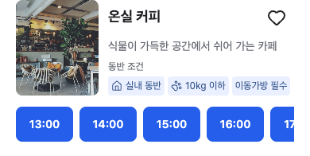
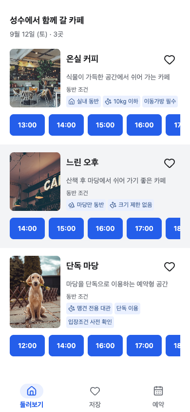
E4 실제 입력 프롬프트 펼치기
이번 변경은 구현 전 고정 P4와 공유 스타일 계약을 함께 전달했어요. 최초 P1–P3는 교정 이력에 보존했어요.
- 공통: 최대430px, 가로20px 패딩 소유권 유지. 본문 및 조건14px 하한, 제목22px/섹션·매장이름18px. 페이지 #fff, 중립 조작 #f3f4f6, hover #e9edf3, 선택 보조면 #eaf0ff, 주 행동 hover #174bc5, 오류 #b42318. 역할 토큰에서 정의/참조한다. 경계선·탭 밑줄·슬로건을 추가하지 않는다. - E4: 이름/조건을 먹색/중립 회색으로 구별한다. 시간 선택은 청색+흰 글자로 실제 예약 진입임을 표시. 3열44px 이상, 시각적으로 해당 매장의 끝에 묶는다. 매장간32px. 200% 글자 확대에서 시간 숫자가 중간에 끊기지 않도록 `.slots button`의 숫자는 nowrap으로 보존하고 필요하면 가로 padding을 줄인다. 확대와320px 동시 조건에서도 겹침이 있으면 열을 줄이는 적응안을 적용한다.
Q5 · 확인한 조건을 예약 선택까지
날짜는 마감 여부와 관계없이 같은 높이예요. 마감일은 비활성으로 표시하고, 인원·반려동물 셀렉트는 공통 필드와 화살표로 맞췄어요.
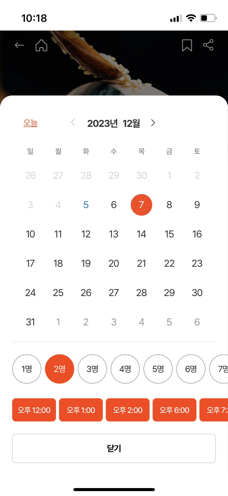
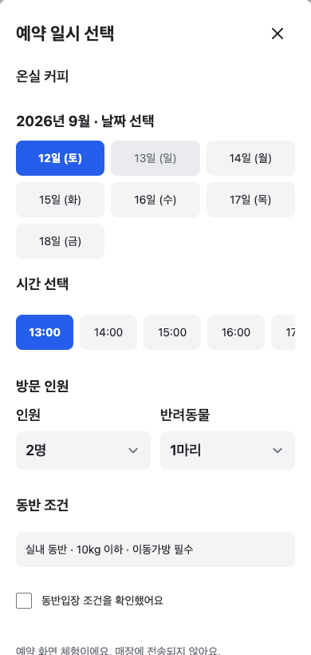
E5 실제 입력 프롬프트 펼치기
이번 변경은 구현 전 고정 P4와 공유 스타일 계약을 함께 전달했어요. 최초 P1–P3는 교정 이력에 보존했어요.
- 공통: 최대430px, 가로20px 패딩 소유권 유지. 본문 및 조건14px 하한, 제목22px/섹션·매장이름18px. 페이지 #fff, 중립 조작 #f3f4f6, hover #e9edf3, 선택 보조면 #eaf0ff, 주 행동 hover #174bc5, 오류 #b42318. 역할 토큰에서 정의/참조한다. 경계선·탭 밑줄·슬로건을 추가하지 않는다. - E5: 기존 날짜/시간/동반 인원/조건 동의/이전/닫기/초안/완료/취소 동작 보존. 미선택은 중립, 선택은 주 실행색, 최종 행동은 같은 색. forced-colors 선택과 초점이 식별되어야 한다.
좋아요 활성 표시 · 테마 호버 교정
저장한 카페는 채워진 하트, 저장하지 않은 카페는 빈 하트로 표시해요. 테마의 불필요한 호버 배경은 제거했고 클릭과 키보드 초점은 유지했어요.
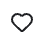
이제는 조합한 화면의 품질을 봐주세요
원하는 카페를 고르기 쉬운지, 테마와 퀵메뉴가 잘 구별되는지, 예약 전에 필요한 조건이 충분히 보이는지 확인해 주세요. 지적해주신 부분은 프롬프트와 실제 화면을 함께 수정해 기록하겠습니다.